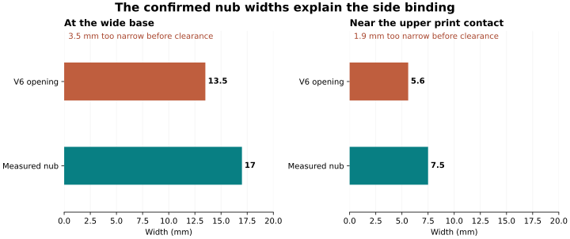
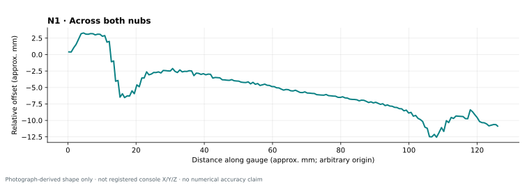
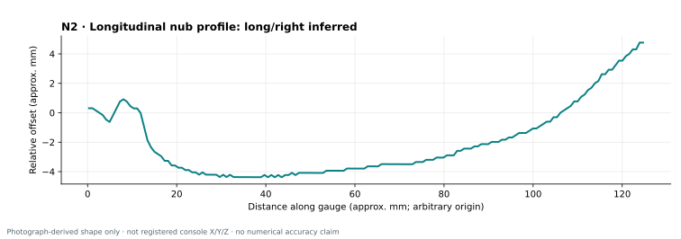
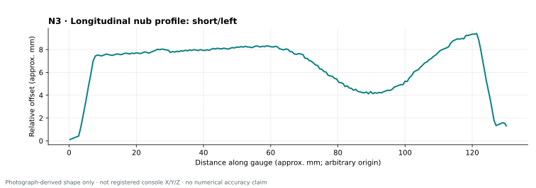
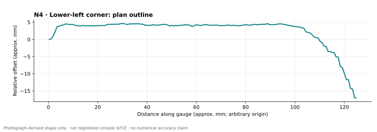
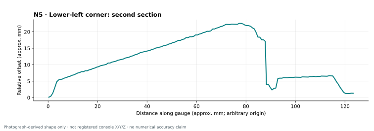
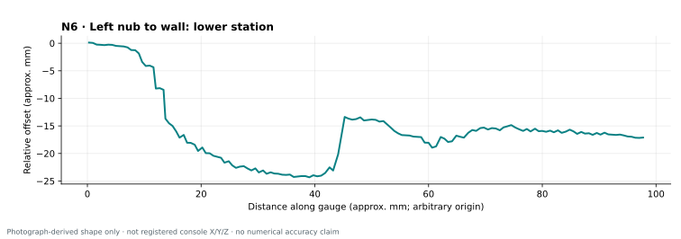
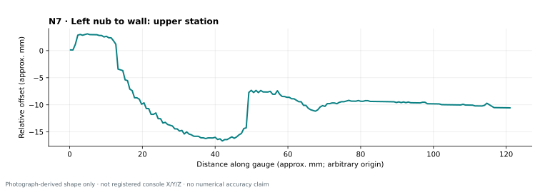

Both inserts bind on the nub sides. The measured nubs are larger than V6's openings: 17 mm versus 13.5 mm at the base; 7.5 mm versus 5.6 mm near the upper contact.

Confirmed input
Value
Meaning
Wide nub base
17 mm
Actual nub, before opening clearance
Upper nub width
7.5 mm
Actual nub at about 4.4 mm above the flat pad
Lower left-nub-to-wall gap
10.3 mm
Wide base edge to inside wall, sideways
Upper left-nub-to-wall gap
14.7 mm
Wide base edge to inside wall, sideways
The two wall gaps do not move the nub ends to Y=10.3 and 14.7. With a symmetric 17 mm base centered at X=0, they imply local wall positions X=-18.8 and -23.2 mm. Do not extend that two-point line through the lower corner: use the corner capture separately.
Width reference confirmed: the user measured 7.5 mm at roughly Z=4.4 mm above the flat pad, not at the crown. The local top of the sloped insert is lower than 4.4 mm over much of its length. Its opening must remain wider there; assigning the narrowest width to the entire sloped upper rim would repeat the binding error.
Candidate fit clearances
These are test options, not a chosen production fit. Each allowance applies to each side of the real nub. Printed dimensions and support cleanup still need checking.
Clearance each side
Base opening
Upper opening at the measured height
0.3 mm
17.6 mm
8.1 mm
0.5 mm
18.0 mm
8.5 mm
0.7 mm
18.4 mm
8.9 mm
How the photos will be used
The curves below retain their approximate gauge-ruler scale, not a normalized fit to old opening targets. Perspective and raised pin tips still limit numerical accuracy. A flat traced line would improve metrology, but the direct measurements already establish the principal width correction. The images are linked without modification.
Next design sequence: establish the pad-normal width profile, make separate nub fit samples with identifiable clearances, then test the corner independently before combining a full holder. Phone/camera dimensions, crease seating and the 4.5 mm hard thickness limit remain unchanged.
N1 · Across both nubs
Crosswise section across both nubs. The placement establishes orientation; its exact distance above the lower crease is not recorded.
Placement · IMG_0182.jpegShape · IMG_0183.jpeg

Use: Sidewall-shape evidence for both nubs. Direct user measurements of 17 mm at the base and 7.5 mm near the upper print contact supersede the old 13.5 / 5.6 mm openings.
Limit: User confirms 7.5 mm at about Z=4.4 mm above the flat pad, not the crown. Do not make 7.5 mm the upper opening at every position along a sloped part.
User identifies a vertically aligned centerline capture. The broad profile is assigned to the long/right nub provisionally; the hand obscures the placement.
Placement · IMG_0184.jpegShape · IMG_0185.jpeg

Use: Independent longitudinal-shape evidence for this nub; no longer borrow the short nub profile.
Limit: The gauge appears to end before a flat-pad baseline is captured beyond both ends. Absolute end heights and full footprint length cannot be recovered from this curve alone.
N3 · Longitudinal nub profile: short/left
User identifies a vertically aligned centerline capture; placement is beside the left wall at the short nub.
Placement · IMG_0186.jpegShape · IMG_0187.jpeg

Use: Short-nub crown and distinct end-transition evidence. Keep its profile separate from N2.
Limit: No console Y mark or flat-pad Z=0 line is marked on the photograph. Photo grid zero is not the console crease.
N4 · Lower-left corner: plan outline
The gauge appears laid approximately parallel to the pad, with pins following the left perimeter and turning into the lower corner.
Placement · IMG_0188.jpegShape · IMG_0189.jpeg

Use: A plan-outline capture, materially more useful for the corner than the earlier diagonal section. Preserve the traced shape rather than assuming one circular radius.
Limit: Exact contact height and location relative to the nub/crease are not marked. The rounded transition is partly sampled near the gauge end; its continuation along the bottom is incomplete.
N5 · Lower-left corner: second section
The gauge is held at a different angle beside the lower-left corner. A curved run and an abrupt step into the lower border are visible.
Placement · IMG_0190.jpegShape · IMG_0191.jpeg

Use: Evidence for the corner/base transition and for checking a separate corner test piece.
Limit: The section plane and contact height are not explicitly established. The abrupt step includes a border/contact change; do not turn it into a smooth corner fillet or a new floor thickness.
N6 · Left nub to wall: lower station
Crosswise capture of left console wall and short nub near its lower end; user confirms 10.3 mm from the wide base edge to the inside wall.
Placement · IMG_0192.jpegShape · IMG_0193.jpeg

Use: Direct 10.3 mm side gap is authoritative. This section also shows the wall and nub as separate features.
Limit: This is a sideways gap, not a distance from the lower console crease. The shape photo is cropped at the right edge.
N7 · Left nub to wall: upper station
Crosswise capture near the upper end of the short nub; user confirms 14.7 mm from the wide base edge to the inside wall.
Placement · IMG_0194.jpegShape · IMG_0195.jpeg

Use: Direct 14.7 mm side gap is authoritative. Do not substitute a measurement from the narrow crown.
Limit: The side gap locates the wall at this station, not the entire lower-left corner. Contact height and the precise station remain relevant to the wall blend.